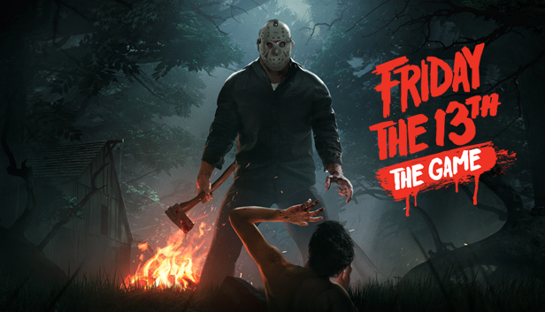

Passons maintenant à un genre de jeux vidéo qui ne plaît pas à tout le monde… L’horreur.
Réservé aux amateurs de frissons et d’ambiances terrifiantes, ce genre peut prendre plusieurs formes. En effet sa spécificité se trouve moins dans son gameplay, comme pour les autres types de jeu dont nous avons parlé, que dans les thèmes abordés.
Popularisé dans les années 1990, il est tout d’abord simplement considéré comme un sous-genre des jeux vidéo d’aventure.
Il faudra attendre plusieurs années avant que le public ne se rende compte que certaines mécaniques sont propres aux jeux
d’horreurs et font d’eux un genre à part entière.
L’une des particularités des jeux d’horreur, c’est qu’ils mettent le joueur dans la position d’un personnage en danger de mort immédiate.
Ce dernier doit fuir, se cacher ou encore s’échapper grâce à des indices et de ressources qu’il devra trouver.
Cela peut être un objet caché dans une pièce, une porte dérobée ou une photo secrète qui ferait la lumière sur la situation.
Toutes ses mécaniques ne sont pas forcément réservées au genre de l’horreur,
mais il faut ajouter à cela une ambiance angoissante et anxiogène presque insupportable.
Ce type de jeu se joue très souvent à la première personne, créant une immersion à la fois bienvenue et terrifiante.
Grâce aux technologies amenées par les studios, le genre de l’horreur ne cesse de se renouveler et de se doter de nouveaux éléments.
Toutes ces innovations ont fait que petit à petit, les jeux d’horreur se sont imposés comme un genre à part, particulièrement apprécié de toute une communauté de gamers.